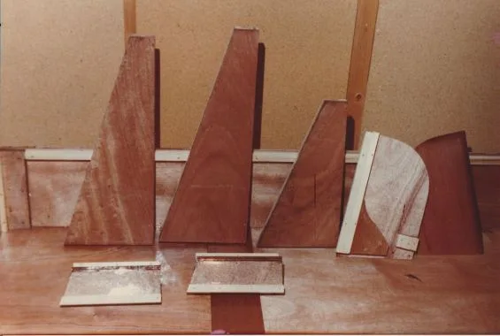
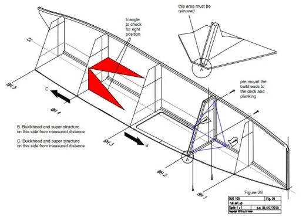
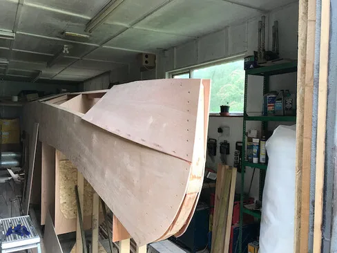
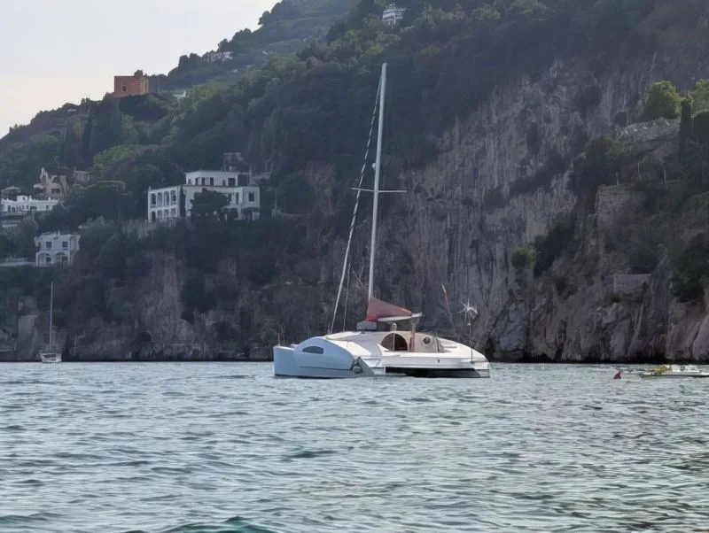

Construction time in workshop hours: Bernd's own figures, plus a few estimates marked ≈ where he gives none. At ten hours a week, 400 hours is about ten months.
Can you repair a chair?
Then you already have most of the skills. Ordinary woodworking tools are enough for nearly all of the work, and nothing needs a mould that is thrown away afterwards.
First boat?
The designer calls the ECO 550 the perfect first boat-building project: 5.5 m, trailerable, about 400 hours. The beach cats, at about 120 hours, are the smallest introduction to the method.
DesignConstruction time, hours
Bernd's own figure≈ our estimate from comparable designs (Bernd gives no figure)
How the estimates were made
The method
Designed to be built

Plywood, glass and epoxy
You can check every joint and every glass lay-up by eye, and every part you make ends up in the boat. Depending on the country, the materials cost four to six times less than a foam-sandwich build. Epoxy does not suffer from osmosis: after 11 years of living aboard PELICAN, the original paint was still on.

Hulls that line themselves up
The small cats use a matched-hole technique from aluminium aircraft building: screws in pre-drilled holes set every panel in place. Asymmetric hulls are built flat on a floor or a table, with no jig, no lofting and no building frame.

Finish it before you turn it
Plywood panels are epoxy-coated and sanded while they lie flat, which takes minutes each and saves hundreds of hours later. The bigger hulls are built upside down and are glassed and painted before they are turned.

PELICAN, home for 11 years
The designer
Bernd Kohler
Bernd studied physics and drew his first catamaran, the SC 435, in 1979. He has designed multihulls for amateur builders ever since and has sold plans over the internet since 2001. His ideas include vertical mainsail furling (1967, on his PENGUIN monohull), the kick-up rudder automatic (1980) and the negative bow (ECO 5.5, 2002), and he was the first to describe how anti-vortex panels work on a catamaran hull.
He has built 15 boats himself and lived aboard his own PELICAN for 11 years. The designs come from that experience: strong, light and economical boats that ordinary builders can actually finish and use. Builders write to him directly, and the K-designs forum of more than 860 members shares thousands of build photos. The forum is closed to spammers: buying a plan makes you eligible to join.
A short booklet for deciding before you commit: the list of materials so you can price the boat in your country, and for many designs example drawings, the speed prediction and stability diagrams. It costs US $10–20. For the KD 1000 it is refunded when you order the full plans. Material prices change quickly, so check them with your own suppliers.
Why plywood, glass and epoxy instead of foam or balsa sandwich?
Most first-time builders already own the tools, while vacuum or infusion equipment can cost more than the plywood for a whole boat. Quality can be checked by eye. There is no temporary mould to build and throw away, and a plywood hull needs far less fairing. Material costs come out four to six times lower. Epoxy boats do not absorb water or suffer osmosis, and they do not go soft with age.
Will a plywood boat hold its value?
Plywood boats got a bad name before epoxy, when poorly ventilated hulls rotted from the inside. Epoxy-sheathed boats avoid that and last with little maintenance. You may sell for a little less than a comparable polyester boat, but yours cost far less to build: Bernd sold PELICAN in two weeks for about 80% more than it cost him.
Why is there no standing headroom on the bridge deck of the smaller cats?
Bridge-deck clearance should be at least 6% of the waterline length. Add 1.85 m of headroom on top and the saloon roof ends up so high that the boat only works from about 12 m. Build it higher on a smaller boat and it can no longer sail to windward under reduced sail in heavy weather. Standing headroom in the hulls is a different matter, and many of the designs have it.
Why mostly chine hulls?
Plywood naturally makes chine hulls, and there is nothing wrong with chines: modern ultralight ocean-racing monohulls use them too. Most of the designs have a rounded underwater section at the bow that turns into a sharp chine further aft. The chine works together with the anti-vortex panels to go to windward, often better than boats with daggerboards or keels: PELICAN points as high as a very good monohull.
Do asymmetric hulls need daggerboards or keels?
No. An asymmetric hull works like a wing standing in the water. At the 3–4° of leeway a catamaran sails with, an asymmetric section gives roughly twice the lift of a symmetric one, so it goes to windward without boards. The trade-off is slender hulls with less room inside, which is why the bigger cruisers use symmetric hulls with anti-vortex panels.
Is coming about difficult with asymmetric hulls?
Think of driving a car through a corner. Steer smoothly and the boat comes through the wind like any good catamaran; jerk the helm and it simply carries on straight.
Do the boats hobby-horse?
No. Hulls with more volume aft than forward damp the pitching, and the ends are kept light, with an empty collision compartment in the bow, so the boat recovers quickly from each wave.
How does the biplane (parallel) rig work?
Two free-standing sails side by side give more sail area on shorter spars, so the centre of effort is lower and the boat can carry sail in more wind. The air speeds up in the gap between the sails, which adds power. It works to windward and needs a light boat; downwind you tack instead of goose-winging. Read the full article.
Why flat decks instead of deckhouses?
A flat deck has less windage, so the boat sails better to windward with reduced sail. It also avoids the deck-to-deckhouse joint, which is the weakest spot for wave damage and the usual place for leaks, and it spreads the rig loads more evenly, so the whole structure can be lighter. It is also quicker to build, and walking on a wide flat deck is safer in heavy weather.
From Bernd's notebook
Articles
Questions before you order?
Write to Bernd
He answers builders personally, beginners included.